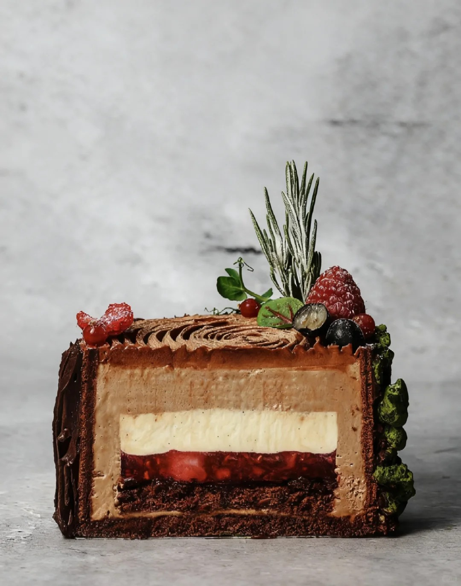
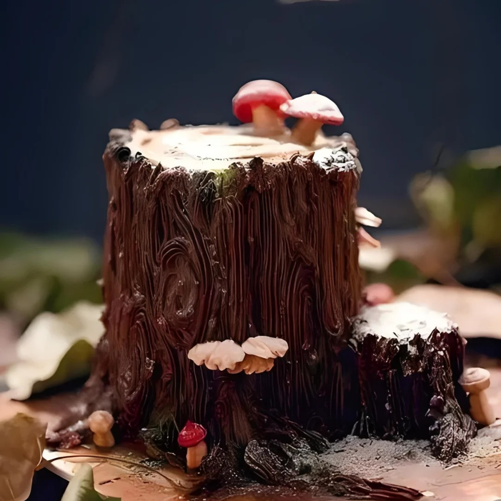

木材蛋糕



木材蛋糕（Yule log），又称树桩蛋糕、圣诞柴薪蛋糕，是法国特色传统圣诞甜品。原始的木材蛋糕口味以咖啡、巧克力或香橙干邑甜酒等为主，如今则更加丰富，水果慕斯奶油、马斯卡彭等都可作为馅料，为蛋糕增添不同风味。对于法国人来说，圣诞节有全家团圆守夜的习惯，半夜时全家会聚在暖炉前吃木材蛋糕，配着咖啡或红茶，驱赶寒意，联络感情。木材蛋糕也象征着好运与希望，是圣诞节不可或缺的食物。 据说 5000 年前，法国老百姓会在圣诞节前夕挑选一棵结过果子的大树，取其树干，在圣诞夜让家中最年长和最年幼的成员一起将其放入壁炉燃烧，象征着家的延续和爱的传递，部分地区还会倒上葡萄酒，寓意来年葡萄大丰收。工业革命后，壁炉逐渐被废弃，1870 年左右，木柴蛋糕诞生，成为传统祈福仪式的延续。